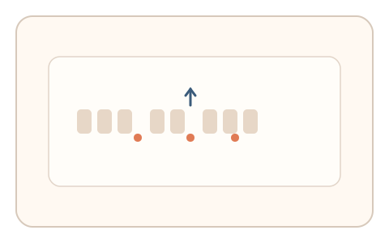
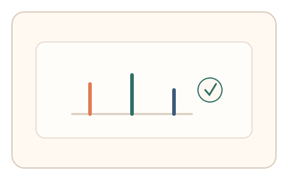

#76
视觉思考范式：文字与符号
已扩展
标点视觉节律
利用无标点短句的视觉节奏提示让用户插入标点，以插入位置与顺序验证真实性。
概念原文
给出无标点的短句，以视觉布局提示节奏，用户插入标点；记录插入位置与先后顺序。
利用人类对阅读节律的视觉化直觉，而不是语义解析。
研究背景
阅读节律与停顿与标点位置密切相关，即使缺乏语义也会产生视觉分段倾向。记录标点插入位置与时间顺序，可提取人类在节奏感知上的稳定特征。
核心机制
- 呈现无标点的短句，并用布局暗示节奏。
- 用户插入标点符号完成分段。
- 记录插入位置、先后顺序与停顿。
- 多轮不同句式建立稳定分布。
用户流程
- 步骤 1：用户看到无标点短句与插入工具。
- 步骤 2：用户插入标点形成节奏分段。
- 步骤 3：系统记录位置与顺序并判定。
判定信号
标点插入位置
人类节奏分段在位置上具有聚集性。
插入顺序与停顿
真实用户会呈现自然的节奏化停顿。
判定逻辑
插入位置与顺序需符合人类节律分布；随机或等距分布判异常。
对抗面
- 规则化脚本按固定间隔插入标点
- 重放真实用户的插入序列
防御与缓解
- 随机化句长、字体与布局节奏
- 引入轻微视觉扰动降低模板化
- 叠加停顿与指针轨迹信号进行多信号判定
可达性与风险
提供更简短句式与键盘操作，对语言障碍用户提供替代任务。
- 语言背景差异导致节奏偏好不同
- 语义不足时分段更具不确定性
可视化状态

状态 1：无标点短句
视觉布局暗示节奏分段。

状态 2：插入标点
用户插入标点并形成节奏。

状态 3：节律判定
依据位置与顺序判定。
参考资料
Punctuation
说明标点在阅读节奏中的作用。
Prosody (linguistics)
说明节奏与停顿的语言学基础。